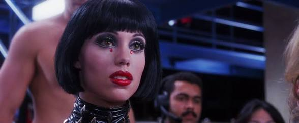

💃 💅 🎪 SHOWGIRLS (1995) — CERTIFIED MGC F-11

🏛 MGC LOWER COURT OF APPEALS
- ASSET TITLE: Showgirls (1995) – The Official Neon Strip & Velvet Melodrama Ledger
- OFFICIAL REGISTRY GRADE: Certified MGC F-11 (Fine Minus / Heavy Dialogue Wear on High-Grade Bullion)
- LOWER COURT JURISDICTION: Judge Tina, Chief of Cult Classics
- CASE FILE: #081
📜 THE FORENSIC NARRATIVE BREAKDOWN & RECOVERY
Tina walks up 👢👢 to the steel bench, tosses an empty champagne flute and a crumpled French fry wrapper into the trash can 🗑, and dials her 5x magnifying lens onto this glittering, deeply scuffed 1995 Las Vegas specimen.
🚨 Key Planchet Flaws:
1. Studio-Grade Strike Depth vs. Catastrophic Script Corrosion
- Under an initial visual sweep, Paul Verhoeven’s Showgirls flashes the unmistakable metallic sheen of big-budget 1990s studio bullion. Shot in razor-sharp widescreen by Jost Vacano with massive Stardust stage choreography and blinding neon production design, the coin’s foundational visual strike is far too clean to drop into the G-tier basement.
- However, the moment Joe Eszterhas’s dialogue engine turns over, the planchet leaks technical engine oil all over the bench. The screenplay suffers from severe structural corrosion—characters pivot from sworn enemies to best friends in a single cut, subplots detonate without warning, and the narrative logic stalls out in a repetitive loop of backstage backstabbing and melodramatic screaming matches.
2. Uncalibrated Acting Friction & Gina Gershon’s Stabilizing Alloy
- The performance metallurgy exhibits extreme, high-voltage friction under the 5x glass. Elizabeth Berkley attacks the role of Nomi Malone with relentless physical velocity, thrashing through scenes and delivering lines with an uncalibrated, jagged cadence that flattens the subtle dramatic details of the coin.
- Yet, just like a rare mint error that collectors fight over at auction, that unhinged commitment generates an undeniable midnight-movie entertainment velocity. Paired with Gina Gershon’s razor-sharp, deadpan camp precision as Cristal Connors—which acts as the sole stabilizing alloy keeping the narrative frame from snapping in half—the asset retains bold, unmistakable eye appeal despite the heavy surface scratches.
3. The Definitive F-11 Slider Allocation
- Let the permanent registry reflect the unvarnished numismatic reality: mainstream corporate critics in 1995 tried to melt this coin down as toxic scrap metal, completely missing its savage satire and unmatched cult durability. At the same time, the MGC High Court cannot ignore the heavy script exhaust and acting fatigue holding it back from a clean F-12.
- It lands squarely on the F-11 line—a scarred, loud, gloriously garish Fine-Minus slider that rules the late-night circuit!
⚖️ THE CHIEF’S FINAL DECREE
- “Different places, different names—same battered bullion! Let the ledger show that while Joe Eszterhas’s script took a sledgehammer to the dialogue engine, Verhoeven minted an immortal midnight-movie heavyweight!”
- 🔧💥 💃 Case Closed. Certified MGC F-11.
Tina grabs her heavy 12-inch crescent wrench and brings it down onto the cold steel bench with a deafening, echoing metallic ring!

• © 2026 MOVIE GRADING CONSENSUS. All Sovereign Rights Reserved.